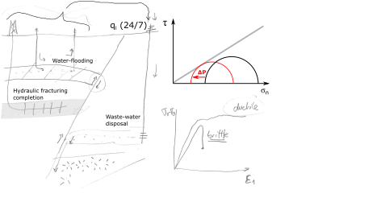

Next: 6.3 Shear failure and Up: 6. Wellbore Stability Previous: 6.1 The wellbore environment Contents
The cylindrical symmetry of a wellbore prompts the utilization of a cylindrical coordinate system rather than a rectangular cartesian coordinate system.
The volume element of stresses in cylindrical coordinates is shown in Fig. 6.4.
The distance  is measured from the center axis of the wellbore.
The angle
is measured from the center axis of the wellbore.
The angle  is measured with respect to a predefined plane.
is measured with respect to a predefined plane.
 |
The normal stresses are radial stress
 , tangential or hoop stress
, tangential or hoop stress
 , and axial stress
.
The shear stresses are
, and axial stress
.
The shear stresses are
 ,
,
 , and
, and
 .
.
The Kirsch solution allows us to calculate normal and shear stresses around a circular cavity in a homogeneous linear elastic solid . The complete Kirsch solution assumes independent action of multiple factors, namely far-field isotropic stress, deviatoric stress, wellbore pressure and pore pressure.
 is shown in Fig. 6.5.
The presence of the wellbore amplifies compressive stresses 2 times
is shown in Fig. 6.5.
The presence of the wellbore amplifies compressive stresses 2 times
 all around the wellbore wall in circumferential direction.
The presence of the wellbore cavity also creates infinitely large stress anisotropy at the wellbore wall
all around the wellbore wall, since
all around the wellbore wall in circumferential direction.
The presence of the wellbore cavity also creates infinitely large stress anisotropy at the wellbore wall
all around the wellbore wall, since
 in this case.
Stresses decrease inversely proportional to and are neglible at
in this case.
Stresses decrease inversely proportional to and are neglible at  4 radii from the wellbore wall.
4 radii from the wellbore wall.
 is shown in Fig. 6.6.
We assume a non-porous solid now.
This assumption will be relaxed later on.
Wellbore pressure adds compression on the wellbore wall
is shown in Fig. 6.6.
We assume a non-porous solid now.
This assumption will be relaxed later on.
Wellbore pressure adds compression on the wellbore wall
 , and induces cavity expansion and tensile hoop stresses
all around the wellbore.
, and induces cavity expansion and tensile hoop stresses
all around the wellbore.
 aligned with
is shown in Fig. 6.7.
The deviatoric stress results in compression on the wellbore wall
aligned with
is shown in Fig. 6.7.
The deviatoric stress results in compression on the wellbore wall
 at
at
 and , and in tension
and , and in tension
 at
and
at
and  .
Hence, the presence of the wellbore amplifies compressive stresses 3 times
at
and .
The variation of stresses around the wellbore depend on harmonic functions
.
Hence, the presence of the wellbore amplifies compressive stresses 3 times
at
and .
The variation of stresses around the wellbore depend on harmonic functions
 and
.
and
.
 instead of .
instead of .
Consider a vertical wellbore subjected to horizontal stresses  and
and  , both principal stresses, vertical stress
, both principal stresses, vertical stress  , pore pressure
, pore pressure  , and wellbore pressure .
The corresponding effective in-situ stresses are
, and wellbore pressure .
The corresponding effective in-situ stresses are
 ,
,
 , and
, and  .
The Kirsch solution for a wellbore with radius
.
The Kirsch solution for a wellbore with radius  within a linear elastic and isotropic solid is:
within a linear elastic and isotropic solid is:
|  | (6.2) |
where
is the radial effective stress,
is the tangential (hoop) effective stress,
is the shear stress in a plane perpendicular to in tangential direction , and
is the vertical effective stress in direction  .
The angle is the angle between the direction of and the point at which stress is considered.
The distance is measured from the center of the wellbore.
For example, at the wellbore wall .
.
The angle is the angle between the direction of and the point at which stress is considered.
The distance is measured from the center of the wellbore.
For example, at the wellbore wall .
An example of the solution of Kirsch equations for
MPa,
 MPa, and
MPa is available in Figure 6.8.
The plots show radial
and tangential
effective stresses, as well as the calculated principal stresses
MPa, and
MPa is available in Figure 6.8.
The plots show radial
and tangential
effective stresses, as well as the calculated principal stresses  and
and
 .
.
Let us obtain
and
at the wellbore wall .
The radial stress for all is
 |
(6.3) |
The hoop stress depends on ,
 |
(6.4) |
and it is the minimum at
and (azimuth of ) and the maximum at
and (azimuth of ):
 |
(6.5) |
These locations will be prone to develop tensile fractures (
and ) and shear fractures (
and ).
The shear stress around the wellbore wall is
.
This makes sense because fluids (drilling mud) cannot apply steady shear stresses on the surface of a solid.
Finally, the effective vertical stress is
| (6.6) |